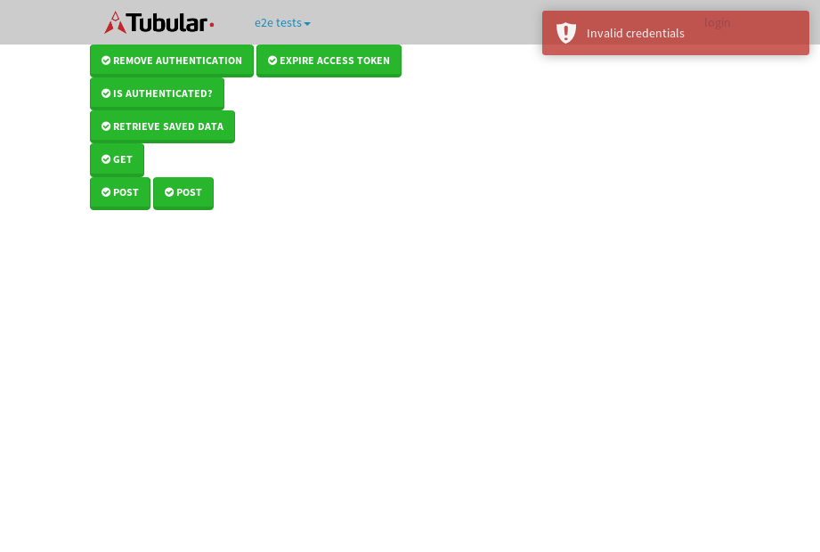

tbColumn.Grid Sorting - 25.778sTests: 5Skipped: 0Failures: 0 should sort data in ascending order then on descending order when sorting by Order Id column - 5.206sTests passed: 100.00%should order data in ascending order when click-sorting an unsorted text column - 4.75sTests passed: 100.00%should order data in descending order when click-sorting an ascending-sorted text column - 5.376sTests passed: 100.00%should order data in ascending order when click-sorting an unsorted date column - 5.044sTests passed: 100.00%should order data in descending order when click-sorting twice an unsorted date column - 5.4sTests passed: 100.00%
tbEmptyForm - 3.266sTests: 3Skipped: 0Failures: 1 should have an empty required field - 0.722sTests passed: 100.00%should not be able to click on save - 0.581sExpected null not to be null null.✗Tests passed: 50.00%should load default value for numeric field - 0.464sTests passed: 100.00%
Tubular Filters.tbColumnFilter - 105.946sTests: 12Skipped: 0Failures: 0 should cancel filtering when clicking outside filter-popover - 9.318sTests passed: 100.00%should disable Value text-input for "None" filter - 6.784sTests passed: 100.00%should disable apply button for "None" filter - 6.693sTests passed: 100.00%should decorate popover button when showing data is being filtered for its column - 12sTests passed: 100.00%should correctly filter data for the "Equals" filtering option - 8.156sTests passed: 100.00%should correctly filter data for the "Not Equals" filtering option - 8.557sTests passed: 100.00%should correctly filter data for the "Contains" filtering option - 8.021sTests passed: 100.00%should correctly filter data for the "Not Contains" filtering option - 8.237sTests passed: 100.00%should correctly filter data for the "Starts With" filtering option - 6.889sTests passed: 100.00%should correctly filter data for the "Not Starts With" filtering option - 6.776sTests passed: 100.00%should correctly filter data for the "Ends With" filtering option - 6.736sTests passed: 100.00%should correctly filter data for the "Not Ends With" filtering option - 6.79sTests passed: 100.00%
Tubular Filters.tbColumnDateTimeFilter - 134.728sTests: 12Skipped: 0Failures: 0 should cancel filtering when clicking outside filter-popover - 7.484sTests passed: 100.00%should disable Value text-input for "None" filter - 6.656sTests passed: 100.00%should disable apply button for "None" filter - 6.717sTests passed: 100.00%should clear filtering when clicking on Clean button - 17.389sTests passed: 100.00%should decorate popover button when showing data is being filtered for its column - 11.555sTests passed: 100.00%should correctly filter data for the "Equals" filtering option - 7.03sTests passed: 100.00%should correctly filter data for the "Not Equals" filtering option - 7.215sTests passed: 100.00%should correctly filter data for the "Between" filtering option - 12.217sTests passed: 100.00%should correctly filter data for the "Greater-or-equal" filtering option - 12.228sTests passed: 100.00%should corretlly filter data for the "Greater" filtering option - 11.884sTests passed: 100.00%should correctly filter data for the "Less-or-equal" filtering option - 11.638sTests passed: 100.00%should correctly filter data for the "Less" filtering option - 11.917sTests passed: 100.00%
Tubular Filters.tbColumnOptionsFilter - 80.565sTests: 3Skipped: 0Failures: 0 should cancel filtering when clicking outside filter-popover - 8.645sTests passed: 100.00%should decorate popover button when showing data is being filtered for its column - 11.87sTests passed: 100.00%should filter column-elements in accordance to the selected filter when selecting a single option - 48.896sTests passed: 100.00%
Tubular Filters.tbTextSearch - 49.278sTests: 5Skipped: 0Failures: 0 min-chars is not set - 0.937sTests passed: 100.00%should filter data in searchable-column customer name to matching inputted text, starting from 3 characters - 7.218sTests passed: 100.00%should filter data in searchable-column shipper city to matching inputted text, starting from 3 characters - 11.94sTests passed: 100.00%should show clear button when there is inputted text only - 6.772sTests passed: 100.00%should clear filtering when clicking clear button - 16.81sTests passed: 100.00%
tbForm related components.tbCheckboxField - 6.329sTests: 2Skipped: 0Failures: 0 should save changes on "SAVE" - 2.742sTests passed: 100.00%should discard changes on "CANCEL" - 2.225sTests passed: 100.00%
tbForm related components.tbDropDownEditor - 10.626sTests: 5Skipped: 0Failures: 0 should set initial input value to the value of "value" attribute when defined - 1.572sTests passed: 100.00%should show the component name value in a label field when "showLabel" attribute is true - 1.883sTests passed: 100.00%should show a help field equal to this attribute, is present - 1.856sTests passed: 100.00%should submit modifications to item/server when clicking form "Save" - 2.863sTests passed: 100.00%should NOT submit modifications to item/server when clicking form "Cancel" - 1.964sTests passed: 100.00%
tbForm related components.tbTextArea - 15.767sTests: 7Skipped: 0Failures: 0 should set initial input value to the value of "value" attribute when defined - 1.907sTests passed: 100.00%should be invalidated when the number of chars is not in the range of "min" and "max" attributes - 2.201sTests passed: 100.00%should show the component name value in a label field when "showLabel" attribute is true - 1.627sTests passed: 100.00%should show a help field equal to this attribute, is present - 1.727sTests passed: 100.00%should require the field when the attribute "required" is true - 1.739sTests passed: 100.00%should submit modifications to item/server when clicking form "Save" - 2.974sTests passed: 100.00%should NOT submit modifications to item/server when clicking form "Cancel" - 2.895sTests passed: 100.00%
tbForm related components.tbDateEditor - 13.23sTests: 6Skipped: 0Failures: 0 should set initial date value to the value of "value" attribute when defined - 1.751sTests passed: 100.00%should be invalidated when the date is not in the range of "min" and "max" attributes - 2.197sTests passed: 100.00%should show the component name value in a label field when "showLabel" attribute is true - 1.478sTests passed: 100.00%should show a help field equal to this attribute, is present - 1.546sTests passed: 100.00%should submit modifications to item/server when clicking form "Save" - 2.829sTests passed: 100.00%should NOT submit modifications to item/server when clicking form "Cancel" - 2.671sTests passed: 100.00%
tbForm related components.tbTypeaheadEditor - 15.757sTests: 7Skipped: 0Failures: 0 should show an options list when there is an API-info/component entered-data - 1.999sTests passed: 100.00%should select the option clicked - 2.228sTests passed: 100.00%should show a "delete" button when an option/match is selected, and delete the option if button is clicked - 2.553sTests passed: 100.00%should show a label value equal to the component name when "showLabel" attribue is true - 1.515sTests passed: 100.00%should require a value when "require" attribute is true - 1.985sTests passed: 100.00%should submit modifications to item/server when clicking form "Save" - 2.994sTests passed: 100.00%should NOT submit modifications to item/server when clicking form "Cancel" - 1.914sTests passed: 100.00%
tbForm related components.tbSimpleEditor - 18.06sTests: 9Skipped: 0Failures: 0 should set initial input value to the value of "value" attribute when defined - 1.583sTests passed: 100.00%should be invalidated when the number of chars is not in the range of "min" and "max" attributes - 2.065sTests passed: 100.00%should show the component name value in a label field when "showLabel" attribute is true - 1.625sTests passed: 100.00%should set input placeholder to the value of "placeholder" attribute - 2.074sTests passed: 100.00%should validate the control using the "regex" attribute, if present - 1.703sTests passed: 100.00%should show a help field equal to this attribute, is present - 1.568sTests passed: 100.00%should require the field when the attribute "required" is true - 1.799sTests passed: 100.00%should submit modifications to item/server when clicking form "Save" - 3.131sTests passed: 100.00%should NOT submit modifications to item/server when clicking form "Cancel" - 1.979sTests passed: 100.00%
tbForm related components.tbNumericEditor - 14.723sTests: 7Skipped: 0Failures: 0 should set initial component value to the value of "value" attribute when defined - 1.488sTests passed: 100.00%should be invalidated when the entered number is not in the range of "min" and "max" attributes - 2.053sTests passed: 100.00%should show the component name value in a label field when "showLabel" attribute is true - 1.706sTests passed: 100.00%should show a help field equal to this attribute, is present - 2.047sTests passed: 100.00%should require the field when the attribute "required" is true - 2.031sTests passed: 100.00%should submit modifications to item/server when clicking form "Save" - 2.763sTests passed: 100.00%should NOT submit modifications to item/server when clicking form "Cancel" - 2.081sTests passed: 100.00%
tbForm Connection Error NoModelKey - 4.242sTests: 1Skipped: 0Failures: 0 tbForm connection error functionality - 0.571sTests passed: 100.00%
tbForm Connection Error NoServerUrl - 2.338sTests: 1Skipped: 0Failures: 0 tbForm connection error functionality - 0.467sTests passed: 100.00%
tbGridComponents - 37.152sTests: 6Skipped: 0Failures: 2 should add item with newRow method - 5.492sExpected '180 EDIT REMOVE Wed Feb 22 2017 18:39:58 GMT+0000 (UTC)' not to be '180 EDIT REMOVE Wed Feb 22 2017 18:39:58 GMT+0000 (UTC)'.✗Tests passed: 50.00%should add item with newRow method and cancel action - 1.572sTests passed: 100.00%should update item with tbSaveButton - 3.493sTests passed: 100.00%should NOT update item on cancel Update action - 2.724sTests passed: 100.00%should remove item with tbRemoveButton - 21.408sExpected 100 not to be 100, 'should remove the row from the table'.✗Tests passed: 50.00%should NOT remove item on cancel Remove action - 1.036sTests passed: 100.00%
tbGridPager.navigation buttons - 9.662sTests: 1Skipped: 0Failures: 0 should perform no action when clicking on the numbered navigation button corresponding to the current-showing results page - 1.22sTests passed: 100.00%
tbGridPager.navigation buttons.first/non-last results page related functionallity - 3.668sTests: 2Skipped: 0Failures: 0 should disable "first" and "previous" navigation buttons when in first results page - 1.715sTests passed: 100.00%should enable "last" and "next" navigation buttons when in a results page other than last - 1.952sTests passed: 100.00%
tbGridPager.navigation buttons.last/non-first results page related functionallity - 4.774sTests: 2Skipped: 0Failures: 0 should disable "last" and "next" navigation buttons when in last results page - 2.915sTests passed: 100.00%should enable "first" and "previous" navigation buttons when in a results page other than first - 1.859sTests passed: 100.00%
tbGridPager.page navigation - 7.59sTests: 5Skipped: 0Failures: 0 should go to next results page when clicking on next navigation button - 1.695sTests passed: 100.00%should go to previous results page when clicking on previous navigation button - 2.169sTests passed: 100.00%should go to last results page when clicking on last navigation button - 1.233sTests passed: 100.00%should go to first results page when clicking on first navigation button - 1.174sTests passed: 100.00%should go to corresponding results page when clicking on a numbered navigation button - 1.319sTests passed: 100.00%
tbGridPagerInfo - 4.975sTests: 2Skipped: 0Failures: 0 should show text in accordance to numbered of filter rows and current results-page - 1.545sTests passed: 100.00%should show count in footer - 0.856sTests passed: 100.00%
tbHttp - 16.993sTests: 8Skipped: 1Failures: 1 should be authenticated - 2.767sTests passed: 100.00%retrieve data - 2.224sTests passed: 100.00%should not login bad credentials - 2.577sExpected '' to be 'false'.✗Tests passed: 0.00%should have a refresh token - 2.328sTests passed: 100.00%should remove authentication - 2.232sTests passed: 100.00%get method-Is not authenticated - 2.43sTests passed: 100.00%post method-Is not authenticated - 2.435sTests passed: 100.00%should regenerate access token on post - 0s***Skipped***Tests passed: 0%
tbPageSizeSelctor - 9.438sTests: 4Skipped: 0Failures: 0 should filter up to 10 data rows per page when selecting a page size of "10" - 2.034sTests passed: 100.00%should filter up to 20 data rows per page when selecting a page size of "20" - 1.754sTests passed: 100.00%should filter up to 50 data rows per page when selecting a page size of "50" - 2.378sTests passed: 100.00%should filter up to 100 data rows per page when selecting a page size of "100" - 1.773sTests passed: 100.00%
tbRowSelectable - 9.073sTests: 2Skipped: 0Failures: 0 selected rows - 4.866sTests passed: 100.00%unselected rows - 2.685sTests passed: 100.00%
tbSingleForm - 20.07sTests: 8Skipped: 1Failures: 0 should load correct info - 0.001s***Skipped***Tests passed: 0%should change customer name - 3.675sTests passed: 100.00%should save it - 2.909sTests passed: 100.00%should clear the inputs - 2.411sTests passed: 100.00%should update - 2.444sTests passed: 100.00%should reset editor - 2.362sTests passed: 100.00%should not save if not Changes - 3.432sTests passed: 100.00%should not be able to click on save - 2.835sTests passed: 100.00%


{kind=link}